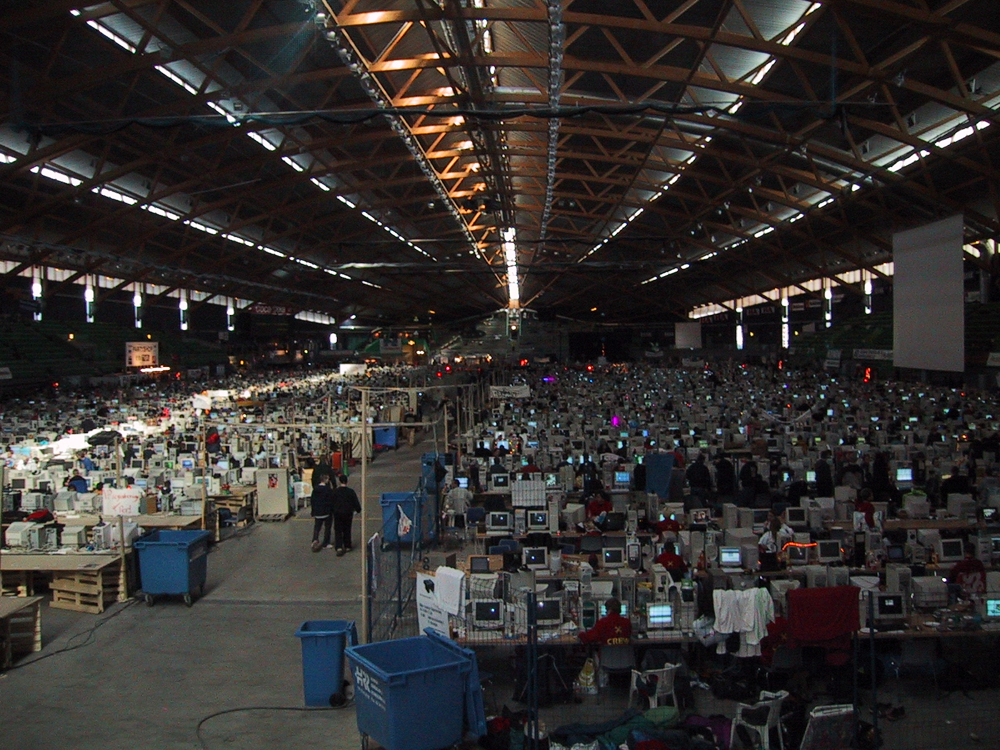
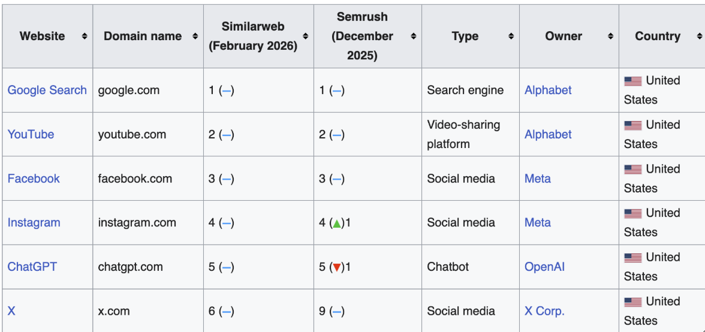
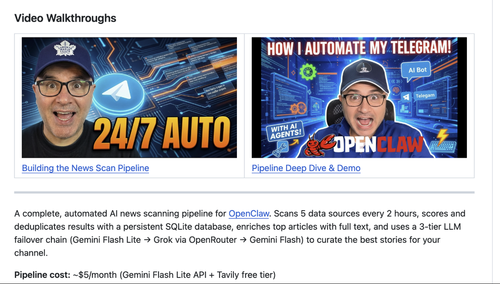

It's strange to believe the origins of the internet. John Rafman compared the early internet to medieval Paris, a city that wasn't very modern in any way. It was extremely difficult to cross, especially for militaries. No defined streets. It was an enclave of separate parts.
The early internet was disorganized, non-hierarchical web networks of individual sites that closely resembled this medieval organization. Blogs flourished. Individual separate websites were not under any optimization. People celebrated their individuality, creating their own websites and making their own tools.
The Haussmann renovation of Paris demolished medieval neighborhoods, deemed overcrowded and unhealthy, constructed large streets through the city that made Paris very carriage- and military-friendly.
Most similarly, the early internet was full of piracy, uncontrollable. Napster, other file-sharing tools. Corporations and interest in tapping into new advertising strategies pushed for the construction of the internet equivalent of the Haussmann renovation, which was the creation of platforms.

Now, nobody really goes to websites anymore. Everyone stays on their feeds. Instagram, TikTok, Facebook, Twitter, and now ChatGPT.
The platform economy made it much easier to capitalize and optimize for advertising dollars, even though a lot of these early platforms failed to make much of a profit when they started.
The grand consolidation. People moving away from this web into the funnel of tightly controlled platforms — "the middle man" — an intermediary between creators and consumers.
In the early days of platforms like YouTube, content creation thrived and the need to optimize wasn't so enforced. People were informal, uploading casually. But as time went on, and more and more content was available, platforms needed to filter and sort content. It was becoming overbearing.
With the influence of advertising on sites, the longer you kept users, the more ads you could serve them. This caused a change in objective for a lot of these platforms. To keep users on the site as long as possible.
Intermediaries are part of the solution to the age-old problem of connecting people with one another — but they become part of the problem when they grow so powerful that they can act as gatekeepers who can usurp the relationship between the two sides of their markets.
The internet is becoming increasingly weird. It once was a place that fostered and housed really cool work and artistry, and now feels extremely hollow and optimized.
Every time I go on YouTube the thumbnails keep getting more colorful, larger faces, more emotional expressions. I was spending time researching AI tools and I get these thirty-something grown-ass men making these weird contorted faces talking about how they just learned how to give AI some memory optimization or how to control its scripting behavior.
These open-mouthed weird expressions. AI-generated backgrounds.

As someone who grew up with Instagram — pre-2016 Instagram without algorithms — it was a very fun place. You could follow who you wanted, then those posts would show up on your feed. Once you reached the end, it wouldn't show you any more. There was no infinite scroll. Explore page was pretty awful and just random content. There were no Reels, no suggested content. Your posts would be snapshots, informal, non-curated. It wasn't so thought out.
The middle man is now in control. Platforms have become so large and looming that what Cory Doctorow's book calls enshittification has taken full effect. Platforms put businesses and users against each other, everyone optimizing and scrambling for attention and views that the content has bent itself into a misshapen, malformed picture, video.
Started wondering why everyone posts the same types of photos, same angles, same approaches. Nobody really wants to stand out. Being weird or having an unconventional take doesn't work in this sort of approval-matrix social media. Everyone is now playing this new status game dictated by what more famous people are doing, what trends they are setting, what is beautiful, etc.
This has always happened but not at this scale, not in such a regimented and systematic way.
Reading Cory Doctorow's enshittification chapter on that...
The maker movement. Vibe coding. You don't need to understand what you're building, you just describe it and the machine builds it. The tools got so easy that the understanding became optional. The result is slop. Not garbage — garbage implies intention. Slop is what happens when production has no friction and distribution has no cost.
Each individual optimization was reasonable. Each individual compromise was small. The accumulation is the catastrophe.